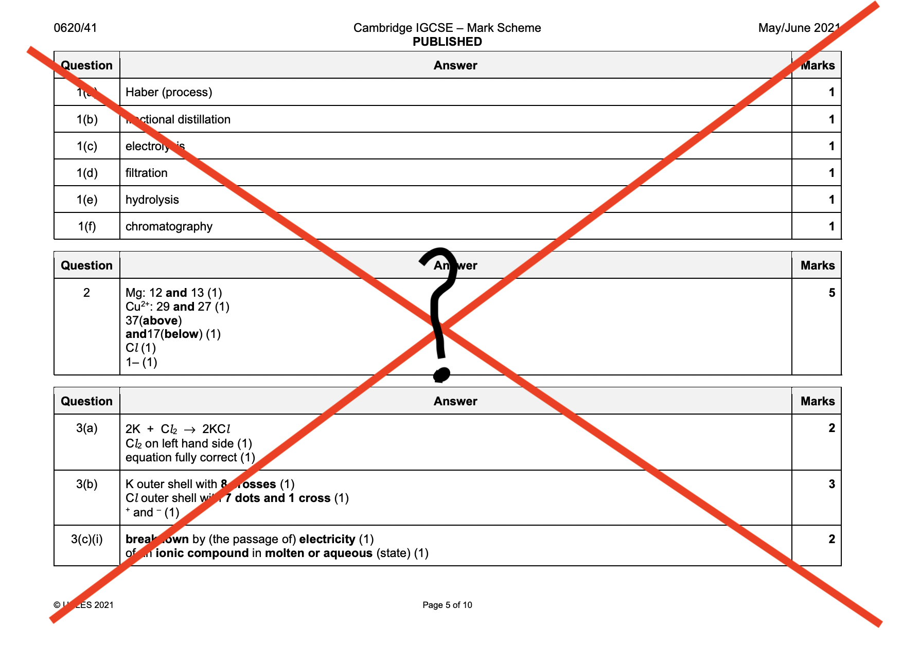

10-31-2020 ~ Girvin Djapardi
Students Using Mark Schemes?

A lot of teachers discourage students from getting hold of mark schemes and examiner reports but I disagree.
I think the main reason teachers discourage this practice as students may get too caught up in these 2 resources and neglect their main area of focus. Not to mention, students may choose to memorize the mark scheme instead of understanding the concepts. These are all valid points but at the end of the day, you are the one taking the test.
You should definitely understand that memorizing the mark scheme is a 'short run' trick. Yes, you may scratch an A or B in IGCSE through this technique but as you progress towards much tougher curricula such as that of AP, A-Levels or IB, memorizing 2 decades worth of mark schemes will get you nowhere. In fact, you will definitely get a big D.
Hence, at the end of the day, it is ultimately your choice as a student to digest and make use of resources given to you. I believe examiner reports are invaluable. It gives you information regarding what is expected as well as common mistakes and pitfalls to avoid. It also gives you insight regarding the type of questions that are commonly asked and aspects students often get wrong. Here, you will understand what concepts students often neglect or get wrong.
Mark schemes, on the other hand, emphasizes what is expected from you. You get a strong grasp regarding the technique behind answering questions. You understand how marks are allocated and why a certain amount of marks are given for each question.
This aids you during revision and when doing past papers. However, do not dwell to much effort and thought into these 2 resources. When doing the past papers, always complete it before looking at the mark scheme. Do not start reading mark schemes and forget about past papers. I suggest reading examiner reports only for papers you found pretty challenging.
With that being said, here are websites that provide the resources I mentioned:
ㅤㅤ1) XtremePapers
ㅤㅤ2) GceGuide
ㅤㅤ3) PapaCambridge